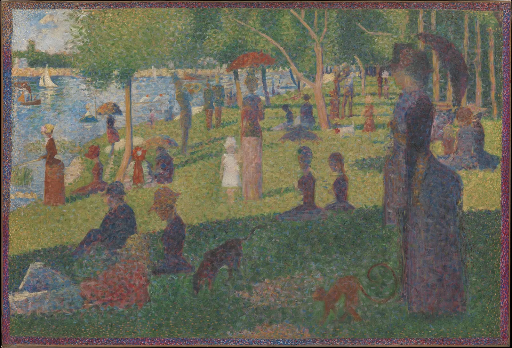
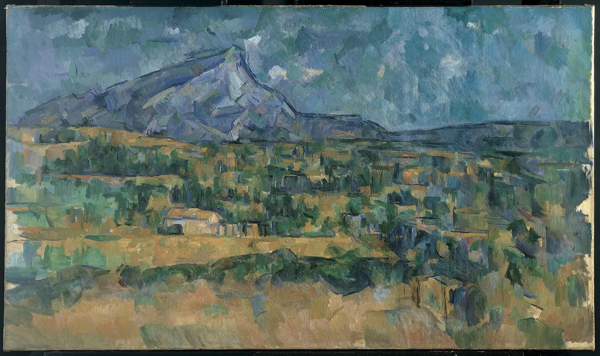
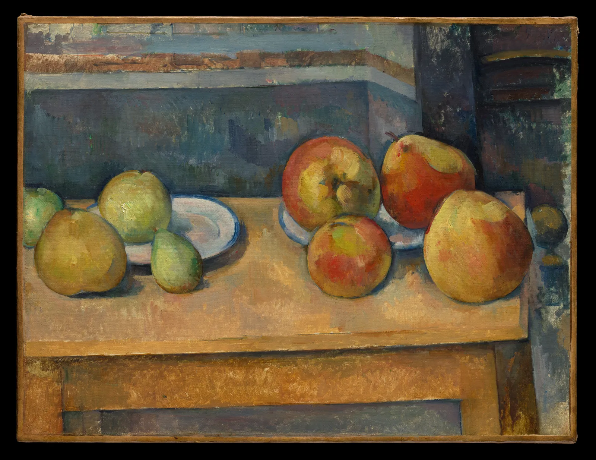
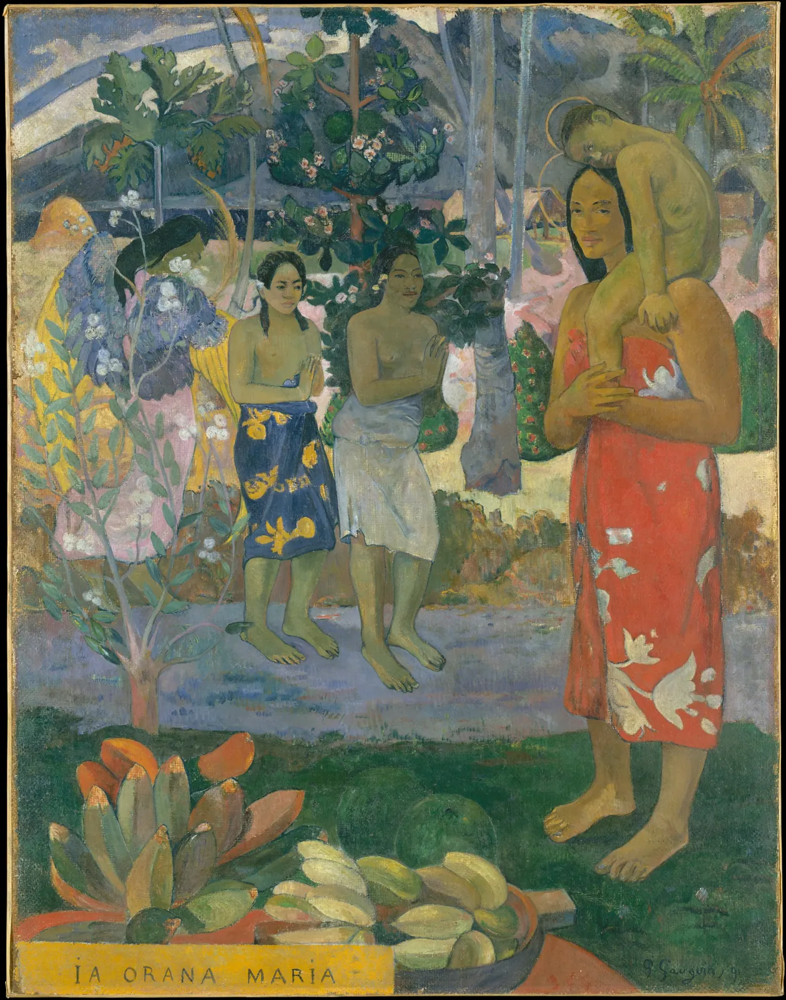

후기 인상주의와 그 너머
1886년 5월, 파리에서 마지막 인상주의 전시가 열렸다. 그 방에는 스물여섯 살의 조르주 쇠라가 2년 동안 매달린 커다란 그림 한 점이 걸렸다. 공원에서 쉬는 사람들을 그렸는데, 붓질이 없었다. 화면 전체가 작은 점으로 덮여 있었다. 같은 해 빈센트 반 고흐는 네덜란드에서 파리로 왔고, 폴 세잔은 엑상프로방스에서 혼자 산을 그리고 있었으며, 폴 고갱은 브르타뉴로 떠날 준비를 했다. 네 사람은 인상주의에서 출발했지만 저마다 다른 문을 열었다. 이 장은 그 네 개의 문을 작품 위에서 하나씩 열어 본다. 점은 정말 눈에서 섞이는가, 산은 왜 조각난 색으로 쌓였는가, 붓질은 어떻게 감정이 되었는가, 그림은 왜 다시 평평해졌는가.
- "후기 인상주의"가 한 사조가 아니라 1910년에 붙인 묶음 이름이라는 것을 알고, 네 화가가 인상주의에서 각각 무엇을 이어받고 무엇을 버렸는지 말한다.
- 쇠라의 점묘가 보는 거리에 따라 어떻게 섞이는지, 그리고 점으로 섞은 색이 팔레트에서 섞은 색과 왜 다른지 계산으로 확인한다.
- 세잔이 한 화면에 여러 눈높이를 넣고, 명암 대신 색의 변화로 덩어리를 세운 방식을 시뮬레이터로 따라 한다.
- 고흐의 팔레트가 네덜란드에서 파리로 오며 어떻게 바뀌었는지, 붓질의 방향이 화면에 어떤 흐름을 만드는지 픽셀에서 뽑아 본다.
- 고갱의 색면과 윤곽선이 만드는 평면성을 보고, 이 네 갈래가 20세기 미술로 어떻게 이어졌는지(그리고 그 계보가 왜 단선이 아닌지) 설명한다.
한 사조가 아닌 네 갈래
후기 인상주의(Post-Impressionism)라는 말은 화가들이 스스로 붙인 이름이 아니다. 영국의 비평가 로저 프라이(Roger Fry)가 1910년 11월 런던 그래프턴 갤러리에서 연 전시 「마네와 후기 인상주의자들」(Manet and the Post-Impressionists)의 제목으로 쓰면서 퍼졌다. 그때는 쇠라와 고흐, 고갱이 이미 세상을 떠났고 세잔도 4년 전에 죽은 뒤였다. "후기"는 "인상주의 다음에 온 여러 가지"라는 뜻에 가깝다. 공통의 선언문도, 함께한 모임도 없었다. 그래서 이 장은 사조의 정의를 외우는 대신, 네 사람이 각자 인상주의의 어떤 문제를 붙들었는지에서 시작한다.
인상주의는 야외의 빛을 빠른 붓질로 붙잡았다(8장). 그 대가로 두 가지가 흐려졌다는 불만이 나왔다. 하나는 형태와 구조다. 순간의 빛을 좇다 보니 사물의 단단함과 화면의 짜임이 녹아 버렸다는 것이다. 다른 하나는 의미와 감정이다. 눈에 비친 것만 그리면 화가가 느끼고 생각한 것은 어디에 있느냐는 물음이다. 네 화가의 답은 이렇게 갈린다.
| 화가 | 인상주의에서 이어받은 것 | 새로 붙든 문제 | 이 장의 렌즈 |
|---|---|---|---|
| 쇠라 | 밝은 색, 색 그림자, 야외의 빛 | 빠른 붓질 대신 체계: 색을 점으로 나눠 눈에서 섞는다 | 색·기법 |
| 세잔 | 자연 앞에서 그리기, 짧은 붓질 | 순간이 아닌 구조: 형태와 화면을 색의 조각으로 짓는다 | 구도·기법 |
| 고흐 | 밝은 팔레트, 보색, 일본 판화 | 보이는 색이 아닌 느끼는 색, 붓질의 방향과 두께 | 색·기법 |
| 고갱 | 밝은 색, 일본 판화의 평면 | 관찰에서 기억과 상징으로: 색면과 윤곽선 | 색·구도 |
쇠라: 점으로 나눈 색
쇠라는 색에 관한 당대의 과학 책을 열심히 읽은 화가였다. 프랑스의 화학자 미셸외젠 슈브뢸(Michel-Eugène Chevreul)이 1839년에 낸 『색의 동시대비 법칙에 관하여』, 미국의 물리학자 오그던 루드(Ogden Rood)의 『현대 색채학』(Modern Chromatics, 1879, 프랑스어판 1881)이 대표적이다. 루드는 물감을 섞으면 색이 탁해지지만, 작은 색 조각을 나란히 놓고 멀리서 보면 눈에서 섞인다는 것을 실험으로 보였다. 쇠라는 이 생각을 화면 전체에 체계적으로 적용했다. 색을 팔레트에서 섞지 않고 작은 점으로 나눠 나란히 찍는 방법이다. 이것을 점묘법(Pointillism)이라고 부르고, 쇠라와 동료들은 색을 "나눈다"는 뜻에서 분할주의(Divisionism)라는 말을 더 좋아했다. 비평가 펠릭스 페네옹(Félix Fénéon)은 1886년에 이들을 신인상주의(Neo-Impressionism)라고 불렀다.

점이 눈에서 섞인다는 말은 반만 맞다. 얼마나 섞이는지는 점 하나가 눈에서 차지하는 각도에 달려 있다. 같은 점도 가까이 서면 크게, 멀리 서면 작게 보인다. 아래 시뮬레이터는 쇠라의 「서커스 사이드쇼」에서 가스등과 남자의 머리 부분을 잘라 왔다. 이 책의 이미지에서 재면 점 하나의 지름은 대략 8픽셀, 실물로 약 3 mm다. 아래 바닥 그림에서 사람을 끌어 그림과의 거리를 바꾸고, 그 거리의 눈에 무엇이 남는지 본다. 그림은 눈에 맺히는 상을 같은 크기로 확대해 보여 준다.
점묘와 보는 거리
멀어질수록 색이 먼저 섞이고 명암의 결은 더 오래 남는다. 눈이 색 차이보다 밝기 차이를 더 촘촘하게 읽기 때문이다(ColorBook 6장). 쇠라 그림 앞에서 적당히 떨어져 서면, 색은 하나로 보이는데 표면은 고르지 않고 빛나는 듯 떨린다. 쇠라와 동료들은 이 떨림을 "빛남"으로 여겼다. 다만 점묘가 물감 섞기보다 더 밝고 선명한 색을 만든다는 당시의 기대는 절반만 맞았다. 아래에서 그 이유를 계산한다.
팔레트에서 섞기와 점으로 나란히 찍기
점으로 나란히 놓인 색은 눈에 들어오는 빛이 더해져 평균이 된다. 그래서 두 색 사이의 밝기를 갖는다. 팔레트에서 섞은 물감은 두 안료가 각자 빛을 빼앗으므로 대개 둘 중 어두운 쪽보다도 어두워진다. 이 점에서 점묘는 확실히 "밝다". 그러나 색상환에서 멀리 떨어진 두 색의 빛을 평균하면 가운데의 회색 쪽으로 간다. 파랑과 노랑 점은 초록이 아니라 회색을 만든다. 쇠라의 그림이 가까이서는 강렬한 색 점의 잔치인데, 멀리서는 의외로 차분한 회색 기운이 도는 이유다. 앞의 「서커스 사이드쇼」 부분도 가까이서는 주황 점 사이에 파랑과 초록 점이 촘촘히 섞여 있는데, 이 책의 계산으로 그 빛을 평균하면 어두운 보랏빛 갈색(#584745)이 된다. 밤의 가스등 아래 공기가 그렇게 칠해졌다.
세잔: 조각난 색으로 짓는 산
세잔은 인상주의 화가들과 함께 전시했지만, 1880년대부터는 고향 엑상프로방스에서 거의 혼자 작업했다. 그가 붙든 문제는 순간의 빛이 아니라 오래 남는 것, 곧 사물의 무게와 화면의 짜임이었다. 1904년 4월 젊은 화가 에밀 베르나르(Émile Bernard)에게 보낸 편지에서 세잔은 자연을 원기둥, 구, 원뿔로 다루고 모든 것을 제대로 된 원근 속에 놓으라고 썼다. 이 구절은 훗날 입체주의의 예언처럼 자주 인용되지만, 편지의 맥락은 기하학적 추상이 아니라 자연을 단단한 덩어리로 보라는 화가의 조언에 가깝다.

세잔의 정물에는 이상한 곳이 있다. 탁자 뒤 모서리가 천 왼쪽과 오른쪽에서 높이가 맞지 않고, 그릇 입구는 옆에서 본 것보다 둥글게 열려 있다. 르네상스 이후의 선 원근법(3장)으로 재면 틀린 그림이다. 한 가지 해석은 세잔이 오래 바라보는 동안 몸과 눈이 움직였고, 그때그때 본 것을 한 화면에 쌓았다는 것이다. 다른 해석은 화면의 균형과 덩어리의 존재감을 위해 일부러 시점을 고쳤다는 것이다. 두 해석이 꼭 배타적이지는 않다. 아래에서 탁자 왼쪽과 오른쪽의 눈높이를 따로 정해 본다.
한 화면, 두 눈높이

그림 4의 사과가 바로 세잔의 두 번째 도구다. 아카데미의 전통적인 방법은 빛을 받는 쪽에 흰색을, 그늘 쪽에 검정이나 갈색을 섞어 명암의 계조로 둥근 덩어리를 만드는 모델링(Modeling)이다. 세잔은 대신 색 자체를 단계적으로 바꾸는 방법을 말했다. 이것을 흔히 색의 전조(Modulation)라고 옮긴다. 아래에서 같은 사과를 두 방법 사이로 옮겨 가며 칠해 본다. 빛의 방향은 손잡이로 끈다.
명암 모델링과 색의 전조
색의 전조는 덩어리의 명도 계조를 줄이는 대신 색상 변화로 형태를 말한다. 그 결과 화면 전체가 고른 밝기의 색 조각으로 채워지고, 깊은 그늘에 구멍이 뚫리지 않는다. 그림 3의 산과 들이 거리가 다른데도 한 면 위에 단단히 붙어 있는 듯 보이는 것도 이 때문이다. 화면 밖의 깊이와 화면 위의 평면을 함께 붙드는 이 긴장이, 젊은 화가들이 세잔에게서 본 새로움이었다.
고흐: 한 캔버스의 두 얼굴
반 고흐는 그림을 늦게, 스물일곱 살 무렵에 시작했다. 네덜란드 뉘넌에서 농민을 그리던 1885년의 그림은 흙빛과 검은 갈색으로 어둡다. 1886년 동생 테오가 있는 파리로 온 뒤 그의 팔레트는 극적으로 바뀐다. 인상주의와 신인상주의 그림을 직접 보고, 쇠라 계열의 점과 짧은 붓질을 시험하고, 일본 목판화를 모았다. 메트로폴리탄 미술관에는 이 변화가 한 장의 캔버스 앞뒤에 남아 있다. 고흐는 1887년 파리에서 캔버스가 모자라자 1885년의 습작 「감자 깎는 사람」의 뒷면에 밀짚모자를 쓴 자화상을 그렸다.
두 면의 차이를 눈대중이 아니라 숫자로 본다. 아래 시뮬레이터는 두 그림에서 주요 색을 뽑아(OKLab k-평균) 넓이 비율대로 띠를 만들고, 아래 판에 색의 위치를 찍는다. 판의 가운데는 무채색이고, 가운데에서 멀수록 채도가 높으며, 방향이 색상이다. 팔레트 띠의 칸을 누르거나 끌면 그 색이 그림의 어디에 있는지 보인다.
뉘넌의 팔레트와 파리의 팔레트
평균 명도와 채도가 함께 크게 올라간다. 그런데 두 번째 발견이 더 흥미롭다. 자화상에서 파랗게 보이는 붓자국은 측정하면 채도가 아주 낮은 회청색이다. 그것이 파랗게 보이는 것은 바로 옆의 주황과 노랑 붓자국 때문이다. 슈브뢸이 말한 동시대비(Simultaneous contrast), 곧 이웃한 색이 서로를 반대 방향으로 밀어 보이게 하는 현상이다(ColorBook의 색의 상대성). 고흐는 비싼 순색 파랑을 넓게 칠하지 않고도 주황 곁에 회청색을 놓아 파랑을 "보이게" 했다. 다만 이 사진의 색은 바니시의 황변과 촬영 조건을 거친 것이어서, 원작의 파랑이 지금보다 선명했을 가능성도 있다.
뉘넌의 그림은 밤의 실내를 그렸으니 어둡다고 말할 수도 있다. 그러나 고흐가 이 시기에 남긴 다른 그림들도 대부분 어둡고, 그는 편지에서 렘브란트와 밀레 같은 어두운 그림을 자주 언급했다. 파리 이후의 고흐는 색을 "보이는 대로"보다 "느끼는 대로" 쓰겠다고 여러 번 썼다. 남프랑스 아를로 옮긴 1888년부터는 색이 더 강해지고, 붓질은 짧은 점과 선에서 두껍고 긴 곡선으로 바뀐다. 물감을 두껍게 올려 붓자국이 그대로 입체로 남는 칠을 임파스토(Impasto)라고 한다.

붓질의 방향은 측정할 수 있다. 이미지의 각 자리에서 밝기가 가장 급하게 변하는 방향을 구하면, 붓자국은 그 방향에 수직으로 놓인다. 주변 여러 픽셀의 방향이 얼마나 한쪽으로 모이는지를 결의 정렬도(0~1)로 나타낸다. 아래 시뮬레이터는 네 그림 위에 그 방향을 짧은 선으로 그린다. 돋보기를 끌어 한 부분의 방향 분포를 본다.
붓질의 결: 방향의 흐름
세 화가의 결은 숫자로도 다르다. 고흐의 붓질은 사물마다 다른 방향으로 길게 이어지고, 세잔의 붓질은 사물과 상관없이 화면 전체에서 같은 방향을 되풀이하며, 쇠라의 점은 방향을 지운다. 붓질은 그림을 만드는 수단이면서 그 자체로 화면의 내용이 되었다. 이것이 20세기 표현주의와 추상 회화가 이어받은 가장 큰 유산 가운데 하나다.
고갱: 평면과 윤곽
고갱은 증권 거래소 직원으로 일하며 그림을 사 모으다 서른다섯 살 무렵 전업 화가가 되었다. 그는 인상주의가 눈에 보이는 것만 좇는다고 보고, 기억과 상상, 상징으로 그리려 했다. 1888년 브르타뉴의 퐁타벤에서 에밀 베르나르와 함께 굵은 윤곽선 안을 평평한 색면으로 채우는 방식을 발전시켰다. 중세 스테인드글라스나 금속 칸 안에 유약을 채우는 칠보(Cloisonné)를 닮았다고 해서 클루아조니즘(Cloisonnism)이라고 불렸고, 고갱은 관찰과 기억과 감정을 한 화면에 합친다는 뜻에서 종합주의(Synthetism)라는 말을 썼다. 같은 해 가을 고갱은 아를의 고흐를 찾아가 두 달 남짓 함께 지냈고, 그 끝은 잘 알려진 대로 불행했다.

평면이 무엇을 하는지 보려면 극단까지 밀어 보면 된다. 아래 비교는 왼쪽이 원본, 오른쪽이 그림을 일곱 가지 색으로 줄이고 색이 바뀌는 경계에 짙은 윤곽선을 그은 것이다. 경계선을 끌어 본다.
고갱의 평면은 일본 목판화(12장)와 중세 미술, 그리고 그가 "원시"라고 부른 비유럽 미술에서 영향을 받았다. 오늘날 이 그림들은 다른 눈으로도 읽힌다. 고갱은 타히티를 문명에 물들지 않은 낙원으로 그렸지만, 그가 도착한 1891년의 타히티는 이미 프랑스 식민지였고 많은 주민이 기독교인이었다. 그의 그림과 글에는 유럽 남성의 환상이 섞여 있고, 그곳에서 어린 여성들과 맺은 관계는 오늘날 비판의 대상이다. 도경의 원칙대로 이 그림은 "그 시대의 눈"으로 평면과 색의 혁신을 보고, "지금의 눈"으로 누가 누구를 어떻게 그렸는지 다시 볼 수 있다. 두 읽기는 서로를 지우지 않는다.
일본 판화가 열어 준 창
네 화가 모두 일본 목판화에서 무언가를 얻었다. 1850년대 일본이 문호를 연 뒤 파리에는 우키요에가 쏟아져 들어왔다. 고흐는 수백 장을 모았고, 1887년에는 우타가와 히로시게의 판화 두 점을 유화로 옮겨 그렸다. 그중 하나가 아래의 「오하시 다리와 아타케의 소나기」다. 고흐의 모사는 지금 암스테르담의 반 고흐 미술관에 있다.

유럽 화가들이 판화에서 본 것은 대략 네 가지다. 그림자 없이 평평하게 칠한 색면, 형태를 감싸는 분명한 윤곽선, 화면 가장자리에서 대상을 과감하게 자르는 구도, 그리고 위에서 비스듬히 내려다보는 높은 시점이다. 이 영향을 통틀어 자포니즘(Japonisme)이라고 한다. 다만 유럽 화가들은 판화를 그 자체의 맥락(에도의 출판 시장, 명소 그림의 관습, 판각과 인쇄의 분업)보다는 자기 문제를 풀 열쇠로 읽었다. 판화는 서양 회화의 각주가 아니라 자기 전통 안에서 완성된 미술이었다. 이 점은 10장과 12장에서 동아시아 미술을 그 자체의 말로 읽으며 다시 확인한다.
20세기로 가는 문
1890년대에 네 화가 중 세 명이 세상을 떠났지만, 그들이 연 문은 20세기 초에 한꺼번에 열렸다. 1905년 파리 가을 살롱에서 앙리 마티스와 동료들의 원색 그림이 "야수들"이라는 조롱을 받았고(야수주의(Fauvism)), 1907년 세잔 회고전 무렵부터 파블로 피카소와 조르주 브라크는 사물을 여러 시점의 면으로 쪼개 다시 짜는 입체주의(Cubism)로 나아갔다. 독일에서는 강한 색과 일그러진 형태로 내면을 드러내는 표현주의(Expressionism)가 자랐다. 이 작품들은 대부분 아직 저작권 보호 기간에 있거나 공공 도메인 이미지를 구하기 어려워, 이 책에서는 도식으로만 잇는다.
이 장의 시작에서 말했듯 후기 인상주의는 "진보"의 한 계단이 아니다. 원근법이 원근법 없는 그림보다 앞선 것이 아니듯, 평면이 입체보다, 추상이 재현보다 앞선 것도 아니다. 네 화가는 각자 무엇을 전하려 했는지에 맞는 도구를 골랐다. 쇠라에게는 체계와 고요가, 세잔에게는 오래 남는 구조가, 고흐에게는 감정이, 고갱에게는 상징이 중요했다. 같은 시기 동아시아에서는 수백 년 동안 다듬어 온 필묵과 여백의 언어가 이어지고 있었다. 다음 장에서 그 언어를 그 자체의 문법으로 읽는다.
종합: 한 장면, 네 가지 말
네 화가의 방법을 한 장면에 차례로 입혀 본다. 아래 시뮬레이터는 같은 원본을 네 가지 "말"로 다시 칠한다. 점묘는 검정 없이 열한 가지 물감 색의 점만으로 원본의 색을 맞추고(점의 색은 이웃 점과 오차를 나눠 가지며 고른다), 구축적 붓질은 화면 전체에 같은 방향의 납작한 붓자국을 깔고, 흐르는 붓질은 원본의 결을 따라 긴 획을 긋고, 색면은 색을 몇 개로 줄여 윤곽선 안에 채운다. 원본은 "책방 골목"(이 책이 그린 가상의 장면), 세잔의 산, 고갱의 그림 가운데 고른다.
후기 인상주의 번역기
어느 말로 옮겨도 원본의 무언가는 잃고 무언가는 얻는다. 점묘는 색을 밝게 띄우는 대신 선과 윤곽이 흐려지고, 구축적 붓질은 화면을 단단히 묶는 대신 사물의 개별성을 누르고, 흐르는 붓질은 움직임을 얻는 대신 고요를 잃고, 색면은 강렬함을 얻는 대신 미묘한 변화를 버린다. 후기 인상주의를 읽는 가장 좋은 질문은 "이 그림은 무엇을 버리고 무엇을 택했는가"이다.
서윤의 작업 노트
8회차: 바닥에 붙인 세 줄의 테이프
10월 23일 토요일, 그림 읽기 모임 8회차. 서윤의 첫 계획은 쇠라의 「서커스 사이드쇼」 전체를 화면 가득 띄우고 "가까이 와서 점을 보세요"라고 하는 것이었다. 리허설에서 한도경이 고개를 저었다. "화면에 그림 전체를 띄우면 실물보다 작아져. 그럼 점이 화면의 화소보다 작아져서 아예 안 보여." 이 책의 이미지에서 점 하나는 약 8픽셀이고, 원본 사진은 가로 3,920픽셀에 그림 폭 149.9 cm이므로 점의 지름은 약 3.06 mm다. 그림 전체를 가로 1 m로 띄우면 점은 2 mm가 되는데, 띄운 이미지의 해상도로는 점 하나가 겨우 몇 화소라 뭉개진다.
그래서 서윤은 가스등과 남자의 머리가 있는 부분(실물로 가로 30.6 cm)만 잘라 실물 크기로 띄우기로 했다. 화면에 띄운 이미지의 폭을 줄자로 재어 30.6 cm에 맞췄다. 그러면 바닥에 서는 자리를 계산할 수 있다. 이 책의 모델로 점 하나가 3분보다 작아지면 색이 섞이므로 \(3.06\,\text{mm} / \tan 3' \approx 3.5\,\text{m}\), 1분보다 작아지면 명암의 결도 사라지므로 \(3.06\,\text{mm} / \tan 1' \approx 10.5\,\text{m}\)이다. 2층 방은 화면에서 가장 먼 창가까지 6.2 m였다. 서윤은 바닥에 테이프 세 줄을 붙였다. 1 m(점이 약 10.5분으로 보여 하나하나 셀 수 있다), 3.5 m(색이 섞이기 시작한다), 6 m(색은 하나인데 표면이 아직 떤다).
모임에서는 참가자들이 테이프를 따라 물러서며 "몇 번째 줄에서 점이 사라졌는지"를 카드에 적었다. 정 선생님은 안경을 벗으면 두 번째 줄에서 이미 섞인다고 했고, 대학생 단골은 세 번째 줄에서도 파란 점이 보인다고 우겼다. 서윤은 그 차이가 모형의 숫자보다 더 좋은 답이라고 노트에 적었다. 눈마다, 조명마다 거리가 다르다는 것을 모두가 몸으로 겪었기 때문이다. 아이와 함께 온 부모는 "멀리서 보면 왜 갈색이 되느냐"고 물었다. 이 부분의 색을 선형광에서 평균하면 #584745(L* 약 32)로, 가까이서 보이던 주황·파랑·초록 어느 것도 아닌 어두운 보랏빛 갈색이다. 서윤은 이 질문을 받아 두 번째 시뮬레이터의 파랑·노랑 점을 화면에 띄웠다.
#584745 L*32
울트라마린+옐로 섞기#545a48 L*37
울트라마린+옐로 점#bf9f85 L*68
8회차의 그림은 네 점으로 정했다. 쇠라 「서커스 사이드쇼」(가스등 부분, 실물 크기), 세잔 「생트빅투아르산」, 고흐 「감자 깎는 사람」과 「밀짚모자를 쓴 자화상」(앞뒤를 한 장으로 넘기며), 고갱 「이아 오라나 마리아」. 읽기 카드는 쇠라의 것을 대표로 이렇게 만들었다.
| 읽기 카드 · 8회차 | 쇠라, 「서커스 사이드쇼」(부분), 1887–88 |
|---|---|
| 색 | 가까이서는 주황·파랑·초록 점, 3.5 m 밖에서는 보랏빛 갈색 하나(#584745). 점으로 섞은 색은 밝기는 평균, 색은 회색 쪽으로 간다. |
| 구도 | 가로로 늘어선 가스등과 세로 기둥의 격자. 인물은 옆모습과 정면으로 굳어 있다. |
| 기법 | 지름 약 3 mm의 점을 나란히 찍었다(분할주의). 1 m, 3.5 m, 6 m 세 줄에서 본다. |
| 질문 | 나는 몇 번째 줄에서 점이 사라졌나? 옆 사람과 같은가? |
핵심 정리
- "후기 인상주의"는 로저 프라이가 1910년 전시에서 붙인 묶음 이름이다. 쇠라, 세잔, 고흐, 고갱은 인상주의에서 출발해 각자 다른 문제(체계, 구조, 감정, 상징)를 붙들었다.
- 쇠라의 점묘에서 색이 섞이는지는 점 하나가 눈에서 차지하는 각도에 달려 있다. 눈은 명암을 색보다 촘촘히 읽으므로, 물러서면 색이 먼저 섞이고 명암의 결은 더 오래 남아 표면이 떨린다.
- 점으로 나란히 놓은 색은 빛의 평균이라 팔레트에서 섞은 물감보다 밝다. 그러나 멀리 떨어진 색끼리는 회색 쪽으로 가므로 더 선명하지는 않다. 파랑과 노랑 점은 초록이 아니라 회색을 만든다.
- 세잔은 한 화면에 여러 눈높이를 쌓고, 명암 모델링 대신 색의 전조로 덩어리를 세웠다. 그 결과 깊이와 화면의 평면이 함께 붙들린다. 비스듬히 나란한 구축적 붓질이 화면을 하나의 재료로 묶는다.
- 고흐의 팔레트는 뉘넌의 검은 갈색에서 파리의 밝은 색으로 바뀌었다(이 책의 이미지로 평균 L* 약 14 → 60). 파랗게 보이는 붓자국은 측정하면 채도가 낮은 회청색이고, 주황 곁에서 동시대비로 파랗게 보인다. 붓질의 방향과 두께가 사물마다 달라 보이지 않는 바람과 열기를 그린다. 그의 그림을 병의 증상으로 읽는 것은 근거가 약하다.
- 고갱의 클루아조니즘은 윤곽선 안의 평평한 색면으로 관찰보다 기억과 상징을 그린다. 그 그림은 혁신으로, 동시에 식민지 시선의 기록으로 함께 읽힌다.
- 네 갈래는 야수주의, 입체주의, 표현주의, 나비파로 이어졌다고 흔히 정리하지만 실제 계보는 엇갈린다. 어느 방법도 다른 방법보다 "발전한" 것이 아니라, 무엇을 전하려 했는가에 따른 선택이다.
확인 퀴즈
1. 쇠라 그림 앞에서 1 m 떨어져 서면 주황·파랑 점이 따로 보이다가, 몇 미터 물러서면 색은 하나로 섞이는데 표면은 여전히 떨리는 듯 보인다. 가장 알맞은 설명은?
2. 울트라마린 블루와 카드뮴 옐로를 같은 비율로 점을 찍어 멀리서 보았다. 팔레트에서 섞은 경우와 비교한 결과로 가장 가능성 높은 것은?
3. 세잔의 정물에서 탁자 뒤 모서리가 천의 왼쪽과 오른쪽에서 높이가 맞지 않는다. 이에 대한 설명으로 가장 알맞은 것은?
4. 고흐의 「감자 깎는 사람」(1885)과 그 뒷면의 「밀짚모자를 쓴 자화상」(1887)에서 주요 색을 뽑아 비교했다. 결과와 그 해석으로 가장 알맞은 것은?